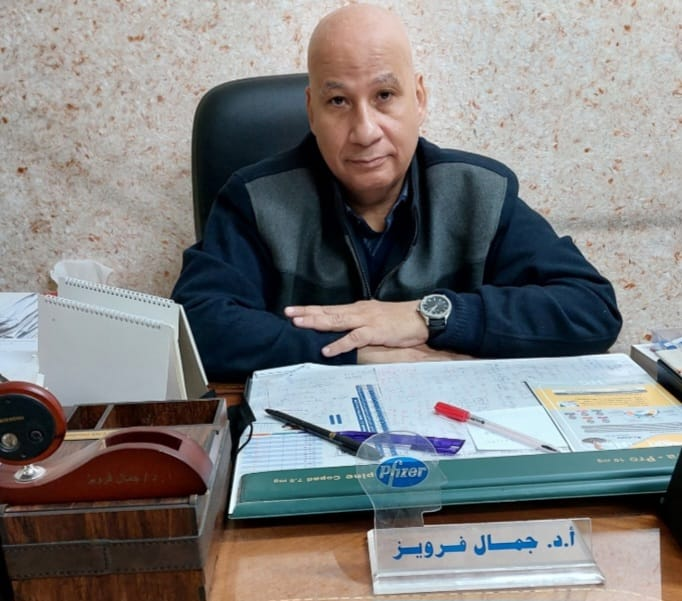
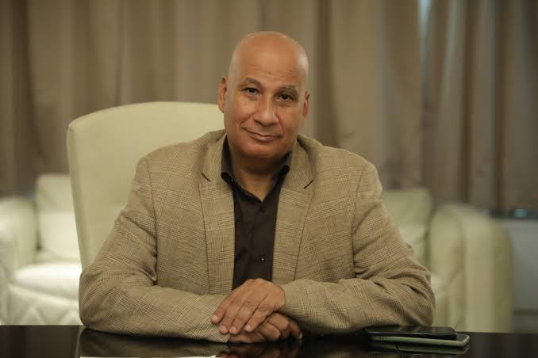
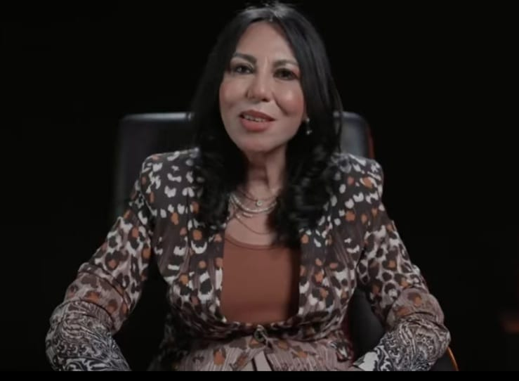
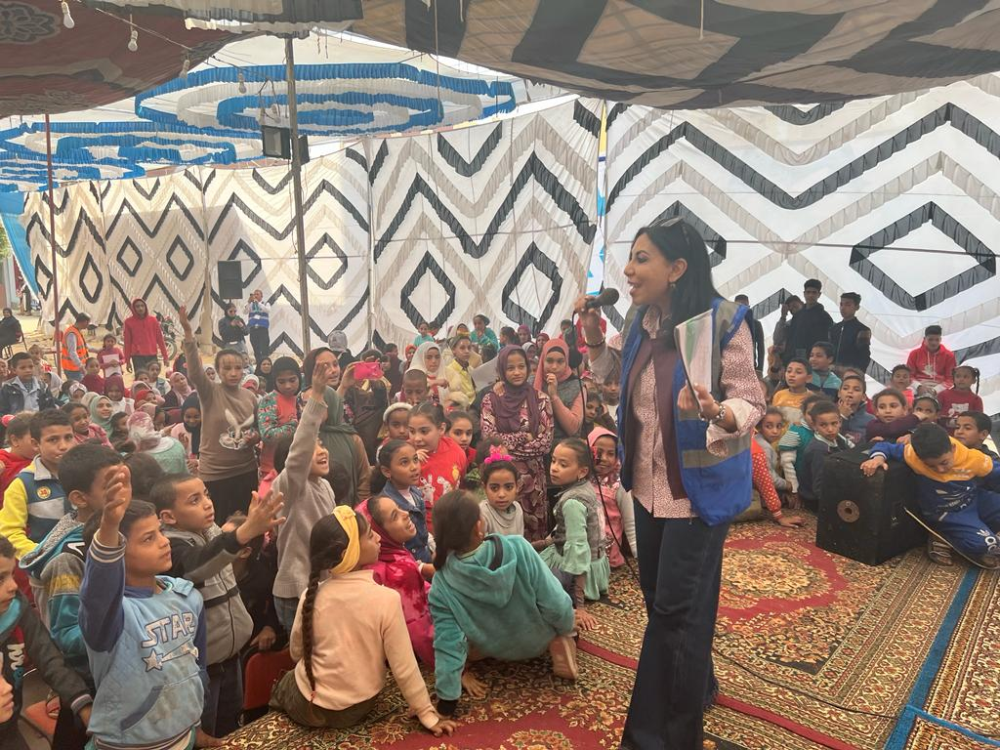

العدوان الطفولي
- بين ضفاف اللعب وأروقة الاكتشاف، تتناغم نغمات الطفولة لتخطو خطواتها الأولى في عالم الحياة، فتتشكل شخصياتهم وتترسخ قيمهم بين لحظات الفرح والتحديات. إن الأطفال ليسوا مجرد أعمدة من الحياة، بل هم رواد المستقبل الذين يستحقون الاهتمام والتوجيه السليم لتنمية قدراتهم وتحقيق إمكانياتهم الكامنة ومن خلال فهم عميق لنفسياتهم واحتياجاتهم، تسعى البرامج التي تروج للطفولة إلى توجيههم نحو طرق السلوك الإيجابي وتعزيز احترام الذات والتعاون مع الآخرين و إبعادهم عم السلوك السلبي أو البرامج التي تدعم هذا السلوك وتتضمن هذه البرامج أنشطة تربوية وتعليمية متنوعة تعزز التفكير الإبداعي والتواصل الفعال، إلى جانب تعزيز القيم الأخلاقية والاجتماعية كالصدق والعدالة والتسامح.
- وسبق وان تحدث وفيق صفوت مختار اختصاصي تربيه وعلم نفس في العديد من الكتب له عن مبادئ التربية الذكية وأحدث اساليب التربية الحديثة و التربية في عصر الانترنت وغيرها من الكتب.
- وعندما تواصلنا مع الاختصاصي توفيق صفوت حول أهم العوامل التي تؤثر في تطوير سلوكيات الطفل علي نحو إيجابي قال: بشكل موجز ومختصر يمكننا القول إنه عندما يقوم الوالدان بتعليم أبنائهما أنماط السلوك المرغوب فيها، فإنهم يرون أنه من الضروري وضع قواعد وحدود لها وهذه القواعد لابد أن تتميز بمراعاة أعمار الأطفال، والظروف الخاصة بالأسرة.
- يشير أن هناك مشاكل عدوانية تعوق الآباء والأمهات و كذلك المعلمين و المعلمات و يعتبر العدوان الطفولي من التحديات التي تواجه الأهل والمعلمين على حد سواء ، ويعزو ذلك إلى الأساليب التربوية والبيئة المحيطة. ينصح بتجنب استخدام العقاب البدني، بل يشجع على ضبط السلوك بالإيجابية من خلال الإثابة والتعزيز، مع استخدام العزل التي تعتبر معززات بالنسبة له عن بدلا من العقاب البدني لتصحيح السلوك العدواني.
- و يحث الآباء على مراقبة محتوى التلفزيون التي تتسم بالعنف والعدوان، حتى يتمكنوا من مساعدة الطفل، لكي يستطيع أن يميز بين العنف الواقعي والعنف الخيالي ويجب اختيار البرامج التلفزيونية بعناية لتجنب تثبيت قيم خاطئة و باستخدام هذه الإرشادات، يمكن للآباء والمعلمين التعامل بفعالية مع تحديات العدوانية الطفولية وتحقيق بيئة تربوية صحية وآمنة للأطفال.
- وأشار إلي المدارس التي تلعب دورا حاسما في تعزيز السلوك الاجتماعي الإيجابي للطفل من خلال خلق بيئة تربوية تشجع على التعاون والاحترام المتبادل، وتعزز قيم المسؤولية والأخلاق الإيجابية، وتوجيه الاطفال لفهم العالم المحيط بهم واكتساب القيم الحيوية، بالإضافة إلى تعزيز الذوق الفني وحب النظام، وتعزيز الوعي بأهمية الحفاظ على الموارد العامة والثروات الوطنية، وتعزيز الضمير والوازع النفسي الداخلي لدى الطلاب بما يساعد علي مقاومة الاغراءات التي تتعارض مع الصالح العام.
- واكد علي أنه يجب علي الوالدين التعامل بشكل صحيح مع نوبات الغضب التي تظهر علي بعض الأطفال قبل سن الخامسة من مظاهر انفعالية، مثل: الضجر، والغضب، والعناد. وقد دلت الأبحاث على أنه إذا تقدم الطفل في السن، اتجهت تلك الأعراض إلى الزوال، أما إذا استمرت تلك الأعراض بعد سن الخامسة اتجهت إلى الثبات، ومن ثم تصبح مشكلة سلوكية و أنه يجب أن يتجنب الأطفال مخاطر الغضب و لابد أن يحافظ الآباء قدر المستطاع على هدوئهم واتزانهم الانفعالي اتجاه ثورة الغضب التي يمر بها الطفل .
- وحذر الآباء من تلبية رغبات أطفالهم تحت تهديد البكاء أو الغضب ، فلا ينبغي أن يكافأ الطفل بحجة حدة الطبع لأن المكافأة لا تعطى أو تمنح إلّا عندما يظهر الطفل سلوكا سويا متزنا ،كما حذر من مناقشة مشكلات الطفل أمام الغرباء، سواء من الأهل، أو المقربين، أو الأصدقاء، بل نحذر من مناقشة تصرفاتهم ومساوئهم في حضورهم، كما لا يجوز استعمال العنف أو القسوة، حتى النقد العابر لإرغام الطفل على الطاعة والهدوء فالهدف هو تعزيز السلوك الإيجابي وتطوير شخصية الطفل بطريقة متوازنة وصحية.
- وأشار وفيق صفوت علي أن هناك جدوى من طبيعة التعلم الاجتماعي والعاطفي (SEL) للأطفال والذي يركز علي تطوير مهارات الأطفال في التعامل مع مشاعرهم والآخرين، وبناء علاقات إيجابية، واتخاذ قرارات مسؤولة ، و يعزز الأداء الأكاديمي من خلال تعزيز مهارات الانتباه والتفكير وحل المشكلات، كما يقلل من المشكلات العاطفية والسلوكية مثل القلق والاكتئاب و التنمر، ويعزز المهارات الاجتماعية مثل التواصل والتعاون. يمكن تطبيقه من خلال برامج تدريبية وأنشطة مخصصة في البيئة المدرسية والأنشطة اليومية للأطفال.
- وأكد أن تطبيقات SEL)) في الصفوف تعزز التواصل والتعاون بين الطلاب، مثل الاجتماعات الصباحية والأنشطة التعاونية والجماعية، وكتابة المذكرات والتحديات الإبداعية . اللعب المفيد يساعد على نمو الطفل عاطفياً وعقلياً، مؤثر بشكل كبير على سعادته المستقبلية وعلاقته بالآخرين.
- و أشار إلي مرحلة الطفولة المتأخرة (9-12 سنة)، التي يظهر الطفل بها تطوراً اجتماعياً ملحوظاً يتمثل في ازدياد احتكاكه بجماعات الكبار و اكتسابه لمعاييرهم وقيمهم و تزايد النقد لتصرفات الكبار والميل إلى انتقاد كل شيء ، بالإضافة إلى توسع دائرة اهتمامه بالقيم الديمقراطية والقدرة على التقييم الأخلاقي للسلوك. يلاحظ الطفل في هذه المرحلة زيادة في التأثير الاجتماعي للأقران، مما يؤدي إلى تعزيز التعاون والتنافس بينهم، ويُسهم في نمو الفردية والمسؤولية الاجتماعية ، ويتضح تبنيه لصفات الذكورة أو الأنوثة بناء على معايير المجتمع وتوقعاته. كما يبتعد الطفل عن التواصل الاجتماعي مع الجنس الآخر، ويظهر التفاعل بينهما بطابع محدود ومشوب بالخجل والفظاظة وأنه من الضروري على الآباء والأمهات مراعاة هذه الملامح وتوفير الدعم والتشجيع لأطفالهم في هذه المرحلة الحساسة، بما يساعدهم على التكيف مع المتطلبات الاجتماعية وتطوير مهاراتهم الاجتماعية بشكل صحيح ومتوازن.
- وعلي صعيد آخر صرح الدكتور جمال فرويز استشاري الطب النفسي أنه يمكن للأهل التعرف علي علامات الاضطرابات النفسية لدي الاطفال عن طريقه رؤيه أسلوب غير طبيعي الطفل مثل عدم الاستجابة و عدم الضحك ، لا ينظر إلينا واضاف أنه من الممكن ملاحظه سلوك مغاير مثل زيادة في الحركة أو مجهد أو تصرفاته غير سوية كل شيء يوضح من خلال تصرفاته و أن الطبيعي دائما يأخذ خط النص وكل ما هو يخرج عن الطبيعي علي الوالدين أن يعلموا أن هناك شيء خطأ وأشار إلي أنه يمكن للوالدين أن يعلموا متي يمكن أن تزداد تلك التصرفات عن طريق ملاحظه اي شيء خارجي يمثل خطورة علي الطفل نفسه أو علي المحيطين بيه وهنا يجب التدخل العلاجي سريعا .
- وأكد أن هناك خطوات يمكن اتخذها في المنزل لدعم الصحة النفسية للطفل تتمثل في عدم التحدث مع الطفل بصوت عالي ، وعدم الدخول في شجار معه ، عدم ضربه لومه علي اي شيء واضاف أيضا أنه يجب عدم مقارنه الطفل بطفل اخر أو أن نمدح في أشخاص أمامه ونقلل منه هو والتنمر عليه هذه التصرفات تأثر علي الطفل حتي و إن كانت بغرض الدعابة أو المزاح معه .
- واضاف جمال فرويز أن المدرسة لها دور كبير في تعزيز الصحة النفسية للطفل وان ما يتم في البيت يجب أن يتم في المدرسة عن طريق عدم اتاحه تنمرات بين الأطفال بعضهم البعض وان نحافظ علي حق الطفل وكرامته بدون أن يوجه له أي نوع من العتاب ويجب علي الوالدين أن يفهموا ما سبب هذا التصرف وحتي أن كان الطفل سبب الخطأ يجب معرفه سببه فمن الممكن أن يكون تعرض للتنمر وكان يحاول الدفاع عن نفسه وأتت برد فعل عكسي.
- وأوضح أنه يمكن أن تؤثر التكنولوجيا علي النمو والصحة النفسية للطفل من خلال سوء الاستخدام و الإفراط الشديد بها يجهد الخلايا العصبية وبالتالي يبدأ تركيز الطفل يقل في التحصيل الدراسي و قليلا الانتباه و جلوسه لفترة طويله علي الهواتف مع الوقت تدفعه للسمنة ، والاجهاد الصبي البصري يعرض اطفال كثيرة ترتدي النظارات في سن مبكر.
- واشار إلي أنه إذا شعرنا بأن الطفل يشعر بالحزن أو علي غير طبيعته في الاكل أو الشرب أو النوم يجب علي الوالدين التحدث معه ويفضل أن تتحدث معه خارج البيت لأنه يكون أكثر حريه في كلامه علي عكس تحدثه في البيت شعرة أن هناك حدود في الكلام ، و أكد علي أن هناك أمراض شائعه للأطفال مثل هوس الاطفال ، و HD ،وفرط الحركة ، وقله الانتباه وان الطفل معرض أن تأتي له مثل هذه الأمراض.
- وأشار إلي أن هناك خمسه قواعد لاحتياجات الاطفال وهي المأكل، و المشرب ، و الملبس والمنام والعاطفة ، ثم الشعور بالأمان، ثم العمل، ثم أدوات العمل، ثم النجاح في الحياة هذه هي العاطفة كلما كانت ممتلئة كانت الصحة النفسية للطفل طيبه وبالتالي الهرم يكون في اتجاه إيجابي ولكن إذا تأثرت هذه القاعدة يبدء الهرم بالاهتزاز و من الممكن أن ينهار واضاف جمال فرويز أنه يجب عدم الضغط علي الطفل أثناء فترة الامتحانات أو أن نقارن بين مسواة الدراسي و مستوي شخص أخر بالنحاول تهدئتهم أثناء فترة الامتحانات لكي لا يتحول الوضع الي شكل سلبي علي الطفل.
- وأشار إلي أنه هناك خرطيه علاج يتبعها مع الطفل عن طريق التحدث الي كلا من الام ، و الأب ، الطفل علي حدي لمعرفه سبب حاله الطفل واعطاء العلاج المناسب
- وعلي جانب آخر صرحت سماح ابو بكر سفيرة شؤون الطفل في مؤسسه حياه كريمة و كتابه أدب الطفل أنها قامت بتأليف سلسلة مكونه من ثلاث أجزاء (كلام سليم ) والسلسلة هدفها هو توعيه الاطفال حول المعتقدات السيئة التي تحول البرامج ترويجها للطفل وأشارت أن أول جزء هو قوس الخطر الذي من خلاله يستطيع الطفل التفريق بين قوس الذي يظهر بالسماء بعد المطر و القوس الذي يرسم و يرمز له للمثلية و اوضحت في كتابها كيفيه التفريق بي القوس الحقيقي الذي يحتوي علي سبعه الوان و القوس الاخر الذي يحتوي علي ست الوان فقط و الجزء الثاني في السلسلة يتحدث عن خصوصيه الجسد و كيف يحافظ الطفل علي جسده وان هناك مناطق لا يصح أن يراها احد و الجزء الثالث يتحدث عن أن الله خلق الحياه ذكر و انثي حتي تتكاثر الناس وأن الفطرة في وجود بشر و الطيور و الحيوانات ليعمروا الأرض و اوضحت أن الثلاثة اجزاء يعملوا علي توضيح المواضيع حتي يكون الطفل مولم بما حوله ولا يتقبل اي شيء يظهر له في الكرتون ويتفرج عليه من مفاهيم خاطئة و الاشياء التي تذاع الفترة الأخيرة يجب أن يكون الطفل مدرك أن هذا الوضع غير صحيح وغير مقبول علي الاطلاق وهذه هي هدف السلسلة.
- وأشارت أنه يجب علي الأهل حمايه أطفالهم من البرامج الترفيهية التي تدعم المثلية كما أنه من واجب الوالدين أن يراقبوا أطفالهم عن طريق متابعه ما يشاهدونه وليس العكس أن يتركوهم بمفرضهم مع الهواتف أو أمام التليفزيون بدون رقابه منشغلين عنهم في حياتهم واضافت أن هذا السلوك غير سليم لأنه سيعرضهم لمشاكل كثيرة و الافضل أن يراقبوا أطفالهم بحيث إذا شاهدوا اي شيء غير لائق يجب إيقافه بسرعه أو منعه تماما من أن يستمر في المشاهدة.
- أوضحت أنه يجب انشاء جيل سوي لديه وعي لهذا النوع من المعتقدات الخاطئة عن طريق أن يكون الطفل مولم بالأشياء الصحيحة و الخاطئة في نوع من الصراحة بينه و بين الأهل واذا تعرض لأي شيء يحكي للأهل عنها بحيث تكون عبارة عن ارضيه مشتركه بينهم وليس العكس أن يشعر الطفل بالخوف عند الحديث مع محاول الالتزام في الرد علي أسئلته بحيث يكون هناك صدر رحب يجاوبه ويفهمه بدلا من القمع الذي يحدث في البيت عند سؤاله للأهل مثل عدم الرد عليه أو لا تتدخل فيما لا يعنيك وهذا النوع من الردود الخاطئة بال يجب أن يكون لدينا إجابات تقنعه وان يكون لدي الأهل الوعي في التحدث بهدوء وليس بعنف .
- وتابعت أن الطفل السوي هو من ينشأ في بيت به تفاهم وصراحه وان يكون هناك شخص يستمع له عندما يكون لديه شكوي من شيء حدث معه ولكن نري الان أنه يحدث العكس من جانب الأهل ليس هناك اهتمام بالطفل ونحن لا نتحدث عن الاهتمام بأن يلبس ملابس من بريندات أو يذهب الي مدرسه جيدة أو أن يذهب الي نادي عريق مشهور لا بالنتحدث عن اهتمام حقيقي للطفل بأن يشعر أنه موجود له كيان في البيت و أن نسأله عن أحواله وليس إن يبقي احساس الطفل اتجاه الأهل مرتبط بالخوف في التعبير عن رأيه ومع الوقت يأثر ذلك عليه ويجعله شخص عدواني.
- وصرحت سماح ابو بكر أن الشكوة المتكررة من الطفل دائما عبارة عن أن الأهل لا يستمعون لهم ولا يشعرون بهم واضافت أن الجيل السابق كان يوجد أسرة تجتمع معا و يتحدثون مع بعضهم البعض وتابعت قائلة: أنا شيافه أن السبب الرئيسي في كل مشاكل الاطفال دلوقتي أن عندهم أزمات نفسية بسبب إحساسهم بالوحدة ووجود فجوه فظيعة بينهم و بين الأهل.
- واضافت أنه يجب علي الأهل رقابه الاطفال حاليا لأنه بيتم الترويج لإعلانات لا تظهر الا للأطفال لترسيخ هذا النوع من المعتقدات في عقول الأطفال وانشاء جيل يؤمن بوجود الفكرة ولذلك يجب الحذر علي الطفل وان نعلمه أن تلك المعلومات خاطئة، بحيث يكون الطفل مدرك لهذه المعتقدات ،وأنها إذا ظهرت أمامه يرفضها بدون تفكير .
- صرحت بسنت بدر أخصائية علم اجتماع أن هناك عوامل تؤثر علي نمو الطفل مثل عدد ساعات و توقيت النوم ، كما أن الطفل الذى ينام أقل من 8 ساعات نموه يتأثر و كذلك الطفل الذى يسهر طول الليل و يستيقظ العصر يتأثر نموه الجسدي و كذلك العقلي وأضافت أن الغذاء الصحي كنوعيه الاكل يأثر علي النمو أيضا وأن العامل الوراثي يؤثر سواء في الشكل طول القامة أو قصر القامة وهناك عامل وراثي مرضي كالأمراض المزمنة مثل السكر و الربو و امراض الدم ... الخ ،و أيضا هرمون النمو وعندما يكون به خلل يؤثر بالسلب علي نمو الطفل ولذلك ينصح بزيارة طبيب مختص كله هذه العوامل تؤثر على نمو الطفل.
- و أشارت أن الطفل يميل لتقليد الكبار المحيطين به لأنه في الأغلب يكونوا الام أو الأب أو العائلة و يعتبروا هم النموذج الاول للمجتمع بالنسبة للطفل فهو يقلد نفس السلوكيات و يتحدث بنفس الألفاظ بشكل لا أرادي منه على أساس أن البيت يمثل العالم الذى ينتهى اليه لذلك أي ام منزعجه من سلوكيات أو ألفاظ غير لائقة من طفلها يجب أن تراجع سلوكيات الكبار المحيطين به.
- واضافت أن للاب و الام دور كبير جدا ومؤثر في تكوين شخصيه الطفل والتي تكمن في إشباع احتياجاته النفسية لكي ننشئ طفل سوي نفسيا وهذا واجب الوالدين في تلبيه احتياجات أطفالهم مثل الاحتواء ، و الاحساس ، و الامان ..إلخ ، كما أن كلما وفر الوالدين الاحتياجات النفسية لأطفالهم بشكل صحيح كلما تطورت شخصياتهم
- وتابعت أنه يجب تعليم الطفل مهارات التواصل الاجتماعي و التعامل مع الاخرين لكي يكون عنده واعي بدوره في المجتمع ولكي نعزز هذه المهارات يجب أن تتم من خلال الابتسامة في وجهه الطفل لتعزيز شعوره بالحب و الاحتواء و الامان ،و الحوار مع الطفل للارتقاء بشخصيته ، و أن نحترم مشاعره و عدم الكذب عليه، وان نسمح له بالمشاركة برأيه و تدريبه على تكوين علاقات اجتماعية ناجحة. واكدت أن الطفل يستجيب لاكتساب المهارات بشكل أكبر عند التعامل مع اطفال مثله أكثر من استجابته عند التعامل مع من هم أكبر منه سنا ولذلك لابد من تعزيز اندماج الاطفال ذوى الهمم في المجتمع بشكل أكبر بمعني أن الطفل من ذوي الهمم ضعيف في مهاره الكلام و التواصل يجب وضعه مع مجموعه من الاطفال المتكلمين وكذا سيكتسب مهارات كثيرة من أقرانه. واضافت أنه يجب تغير فكرنا اتجاه الاطفال ذوى الهمم واستبدالها بفكرة تقبلهم في المجتمع و الرحمة في التعامل معهم ،و بعد التقبل نبدأ في أن يكون عندنا وعى للتعامل مع الاطفال ذوى الهمم دون إشعارهم بالتفرقة ،و تخصيص محاضرات و ندوات في المدارس و الجامعات لنبعد السلوكيات السلبية مثل التنمر و العنف تجاههم ، و بالطبع هذا دور الأسرة و المجتمع و الإعلام.